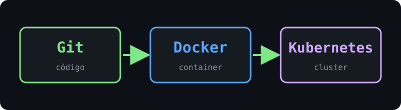

git init
Cria um repositório novo na pasta atual.
git init
Um guia rápido com os comandos básicos de Git, Docker, Linux e Kubernetes, ideal para quem está começando.

Cria um repositório novo na pasta atual.
git init
Baixa um repositório do GitHub.
git clone https://github.com/usuario/repo.git
Mostra o que mudou nos arquivos.
git status
Prepara os arquivos para o commit.
git add .
Salva as mudanças com uma mensagem.
git commit -m "minha mensagem"
Envia seus commits para o repositório remoto.
git push origin main
Baixa e junta as mudanças do remoto.
git pull origin main
Cria e inicia um container a partir de uma imagem.
docker run -d -p 8080:80 nginx
Constrói uma imagem a partir do Dockerfile.
docker build -t minha-app .
Lista os containers em execução.
docker ps
Lista as imagens baixadas.
docker images
Para um container.
docker stop nome-container
Mostra a saída de um container.
docker logs nome-container
Lista os arquivos da pasta.
ls -la
Muda de pasta.
cd /caminho/da/pasta
Mostra em qual pasta você está.
pwd
Cria uma pasta nova.
mkdir minha-pasta
Mostra o conteúdo de um arquivo.
cat arquivo.txt
Lista os pods do cluster.
kubectl get pods
Aplica um arquivo YAML no cluster.
kubectl apply -f deploy.yaml
Mostra os logs de um pod.
kubectl logs nome-pod
Nenhum comando encontrado.